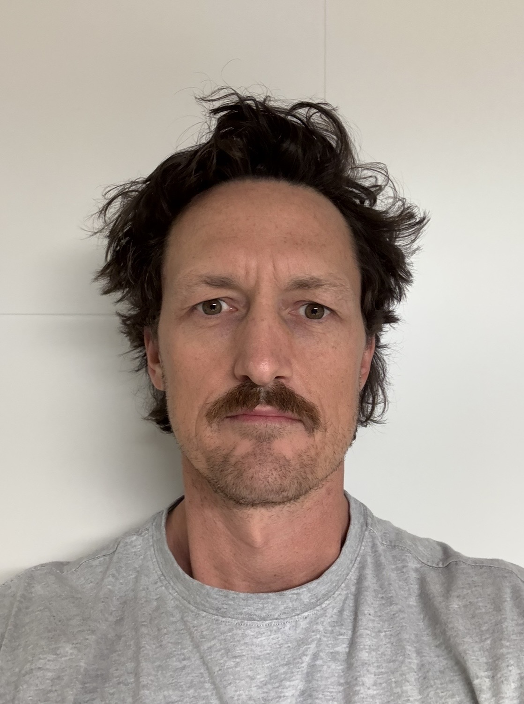

Stretch Desk
A workplace-wellness app concept built with responsive layout and clean UI structure. Aim to reduce pain, improve movement and focus, through 4 pillars; stretch, strength, movement and meditation.
View Project →Alan Watts: "You are an aperture through which the universe is looking at and exploring itself."
1 class Human {
2 constructor(fullStack) {
3 _name = 'Tim Kelly';
4 _age = 40;
5 _location = 'Whistler, BC';
6 _hobbies = [ 'Snowboarding', 'Skiing', 'Surfing', 'Photography' ];
7 _daysUntil100 = ;
8 _daysCoding = ;
9 }
10 };
Timothy Kelly, holding a Masters in International Law, Professional Certificate Full Stack Engineer. An Australian living abroad in Whistler, BC, I have been working as a carpenter for the last 5 years and decided I wanted a new challenge.
I’m passionate about lifelong learning. I’m fascinated by the mysteries of space, the diversity of the human experience, and living a full life outdoors.
I’m excited to build a completely new skill set. Coding feels different from carpentry, but also similar: both are about solving problems in creative ways and designing something real, functional and useful.

A workplace-wellness app concept built with responsive layout and clean UI structure. Aim to reduce pain, improve movement and focus, through 4 pillars; stretch, strength, movement and meditation.
View Project →A Reddit-style project focused on content structure, interaction, and styling practice. With a curated feed, Askme from around the world and a main feed.
View Project →A wellness-based concept / passion project with a simple, focused interface and purposeful content. Aim to supply practical, healthy content for those wanting to let go of unhelpful behaviours.
View Project →My campervan rental company, build designed around branding, layout, and user-friendly flow. My first go at building a fully structured, multi-page website from scratch.
View Project →Interested in working together or just want to connect?